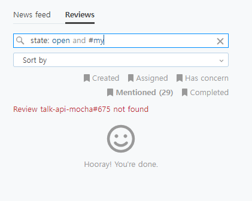

upsource ReviewNotFoundException
2022, Sep 19
upsource jetbrain
problem

#my라고 검색하면 서버에 이렇게 에러가 발생한다.
com.jetbrains.upsource.backend.server.comments.db.ReviewNotFoundException: Review talk-api-mocha#675 not found
at com.jetbrains.upsource.backend.server.comments.db.CrossProjectReviewsTable.getReview(ReviewsTable.kt:224)
at com.jetbrains.upsource.backend.server.comments.db.CrossProjectReviewsTable$getReview$1.invokeSuspend(ReviewsTable.kt)
at kotlin.coroutines.jvm.internal.BaseContinuationImpl.resumeWith(ContinuationImpl.kt:32)
at kotlinx.coroutines.DispatchedTask.run(Dispatched.kt:236)
at java.util.concurrent.ThreadPoolExecutor.runWorker(ThreadPoolExecutor.java:1149)
at java.util.concurrent.ThreadPoolExecutor$Worker.run(ThreadPoolExecutor.java:624)
at com.jetbrains.upsource.util.NamedDaemonThreadFactory.a(NamedDaemonThreadFactory.java:34)
cause
upsource가 설치된 서버를 이전하면서
이전에 마무리 되지 못한 review가 남아있었던 상태에서 백업파일로 덮어서 발생하는 것 같다.
solution
기존 계정을 삭제하고 새 계정을 생성해서 하면 된다.
만약에 진행 중이던 리뷰가 있었다면, 새 계정으로 새로 연결!